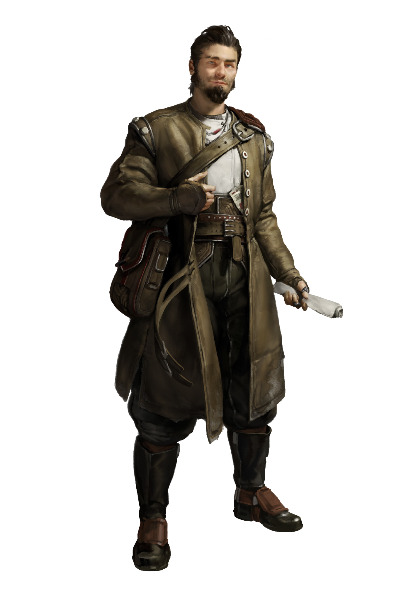

CLAN DOSSIER
Stukov
They form the backbone of civic society.
Clans of the Moloch pp. 9–11

WHAT ONCE WAS
Briefing
“So, we’re agreed? Ten percent less on my stall’s fees?”
“You’re a cur, Havel! Why would I agree to such a presumptuous offer?” The Masek Advocate spat into her bowl of soup. Havel glanced to the left and right of him, making sure nobody in the Garamond was listening in. Then he passed a sheaf of Drafts across the table. “Selma, do you want to see your birdbrain of a son get the apprenticeship at the guild, or not?”
Selma cringed, tossing her handkerchief over the money. “That’s what I call being a pain in the ass, Havel. By far the worst Stukov I’ve come across. Your ancestors would be turning in their graves!”
Havel grinned. “Wrong! They’d be proud to know that I got you to fix the Codex for me."
What Once Was
The rune of a lighting bolt, carved into a door frame, a reindeer dangling from a medallion, a windrose aiming at true North; these are the symbols of the past, littering the Stukov Quarter and revealing the rich heritage of its inhabitants. These depictions harken back to the days of the Clan’s great founder, at a time when the Stukov conquered the Black Lung and ruled over this territory as the undisputed champions of the Borcan wasteland. Until the Judges came.
Things are different now. The Judges clamped down on the burgeoning civilization, lashing the Stukov to their towering bastion of Uptown and forcing them to obey their new regulations with the threat of the hammer. Over time the Clan settled into its new existence, evolving and developing to adapt to its new position, sacrificing its freedom for security, among other things. But, despite the best efforts of the Judges, memories cannot be extinguished as long as one surrounds themselves with fetters of the past. They are carried into the present through stories and legends, and invoked through artistic endeavors. While many these days can never hope to achieve the mythical feats of their forefathers, they still harbor what little is left of the brave Stukov spirit in their own lives. Being marginalized by their new rulers has only reignited their affection for the old ways, causing the members of Clan to embrace their true origins all the more.
Common Folk
Today, the Stukov are soldered into Justitian’s sturdy frame. They form the backbone of civic society, as craftsmen, merchants, tailors, artisans, and guild leaders, jolting the city forward through the force of their labor. Citizenship is common among their ranks, whether by birthright or through recognition for their talents, and the Judges have loosened their once tight leash, no longer seeing the need to hold the Clan in such rigid constraints.
To the Judiciary, the Stukov represent the purest indication of the success of the Protectorate, and the effectiveness of their methods of cultural reeducation. As such, there is no other Clan allowed to integrate themselves so closely to the hierarchy of Justitian, with many posts in Uptown’s Offices manned by Stukov Deputies. After all, any Utopia requires docile and cooperative members in order to function, and the Stukov have been conditioned to precisely fill that role.
Stilted Spark
Not all of the Stukov are content to meekly submit to the rule of the Judges, though. The vast majority of the Clan has been pushed down to the point where even a mild protest is unthinkable, but some cling to the spirit of their ancestors, those who once claimed this wasteland to carve out a place to survive.
These splinter groups gather in the shadows of the city, meeting in backyards or unknown niches, staying out of sight of the Judges to plot and scheme their revolution. For now their numbers are still small, but their will is fierce, and they’ll burn the city down in their quest to take back control if they have to.
Recruitment
The Cults are always hunting for new recruits, replenishing those lost to the harsh dangers of the world, and for those operating in Justitian the Stukov are a perfect target. Their weak cultural identity, eradicated by years of Judicial oversight, and abundant nature makes them eager to take the opportunity to join a larger organization, and the Cults snap them up.
THE CLAN
Hierarchy & Ranks
Select any rank to read its prerequisites, effect, and equipment.
THE CLAN